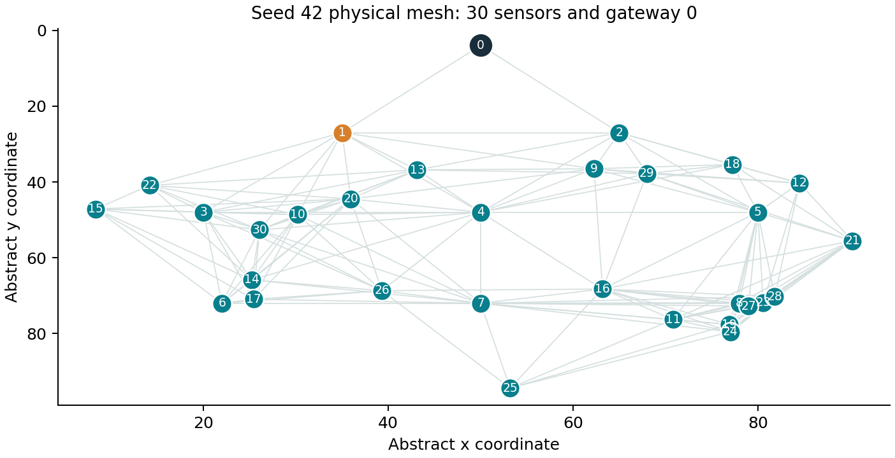
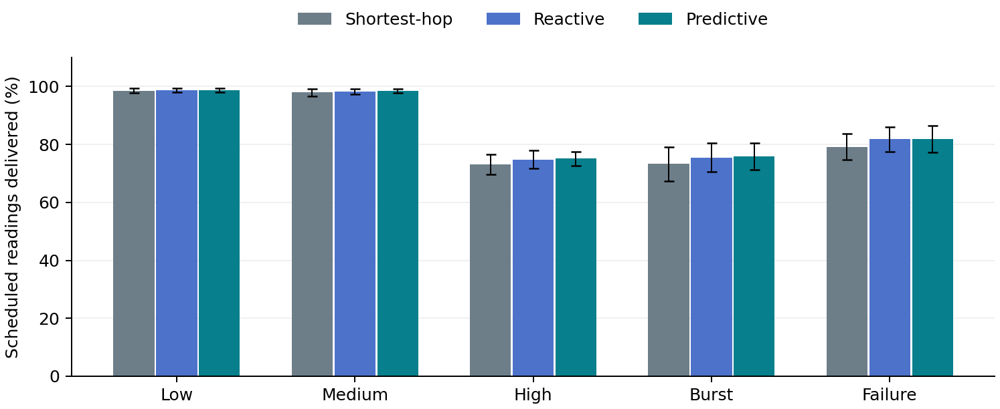
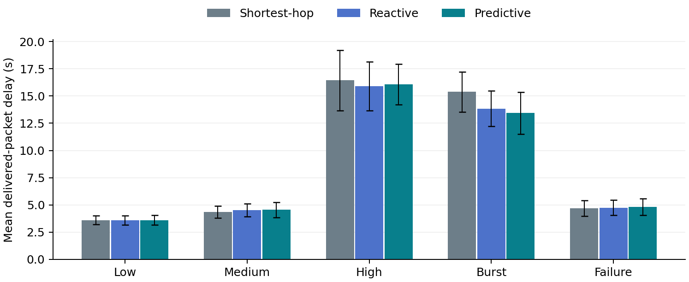

F2 Team19 ReportINNOVATIVE EVALUATION PRACTICES
BCSE308P COMPUTER NETWORKS LAB
PREDICTIVE ADAPTIVE MESH ROUTING PROTOCOL FOR ENERGY-CONSTRAINED IOT NETWORKS
FALL SEMESTER 2026-2027
SLOT F2 TEAM 19
24BCE0817 SIDDHI GULATI
24BCT0084 HARSHITHA NETHI
24BKT0146 SAAMIYA SIDDIQUE
B.Tech.
in
Computer Science and Engineering
School of Computer Science and Engineering
VIT Vellore
October 2026
ABSTRACT
Battery-powered IoT sensors often forward measurements through neighboring relays to reach a gateway. Repeatedly selecting a convenient relay can exhaust its battery and reduce network availability. This project implements a Predictive Adaptive Mesh Routing prototype that uses recent energy consumption to estimate near-future remaining energy. Each sensor smooths its drain rate using an exponentially weighted moving average. Parent selection combines predicted energy risk, link loss, and queue occupancy, while fixed gateway levels prevent loops and hysteresis limits route changes. The prototype includes a Python simulator and an interactive browser dashboard. It compares shortest-hop, reactive energy-aware, and predictive routing using identical seeded topology and traffic conditions. Five scenarios cover low, medium, and high steady loads, a temporary burst, and an injected relay failure. Ten matched seeds per scenario produce 150 simulation runs. At medium load, predictive routing delivers 98.50 percent of scheduled readings on average, compared with 97.92 percent for shortest-hop. Under high load, the corresponding means are 75.05 and 73.08 percent. Improvements are modest and do not hold for every metric or individual seed. The implementation uses illustrative energy units, independent links, and fixed initial levels. It provides a reproducible algorithm demonstration and a foundation for evaluation with calibrated energy and realistic wireless contention.
Keywords: IoT mesh routing, energy prediction, EWMA, parent selection, network simulation, performance evaluation.
CERTIFICATE
This is to certify that the project report titled "Predictive Adaptive Mesh Routing Protocol for Energy-Constrained IoT Networks" is a bonafide record of the work done by Siddhi Gulati (24BCE0817), Harshitha Nethi (24BCT0084), Saamiya Siddique (24BKT0146) in partial fulfilment of the requirements of the Innovative Evaluation Practices for BCSE308P Computer Networks Lab during the Fall Semester 2026-2027.
Name and signature of the students
Siddhi Gulati 24BCE0817
Signature ______________________________
Harshitha Nethi 24BCT0084
Signature ______________________________
Saamiya Siddique 24BKT0146
Signature ______________________________
TABLE OF CONTENTS
| Abstract | 2 |
| Certificate | 3 |
| 1 Introduction | 5 |
| 1.1 Background and motivation | 5 |
| 1.2 Problem statement | 5 |
| 1.3 Objectives | 5 |
| 1.4 Scope and limitations | 5 |
| 1.5 Course and lab mapping | 5 |
| 2 Literature survey | 6 |
| 3 Proposed system | 7 |
| 3.1 Architecture and topology | 7 |
| 3.2 Baseline mechanism | 7 |
| 3.3 Algorithm and pseudocode | 8 |
| 3.4 Novelty statement | 8 |
| 3.5 Assumptions and design decisions | 8 |
| 4 Implementation | 9 |
| 4.1 Tools and 4.2 configuration | 9 |
| 4.3 Code structure and 4.4 challenges | 10 |
| 5 Experimental setup and evaluation | 11 |
| 5.1 Metrics and 5.2 scenarios | 11 |
| 5.3 Repeated-run results | 12 |
| Performance graphs | 13 |
| 5.4 Analysis and 5.5 critical evaluation | 14 |
| 6 Conclusion and future work | 15 |
| 7 References | 16 |
| Appendix A Source and configuration listings | 17 |
| Appendix B Verification evidence and reproduction | 18 |
1 INTRODUCTION
1.1 Background and motivation
A multi-hop sensor network extends connectivity by allowing devices to relay measurements. Sensors near the gateway may forward traffic from several sources and deplete earlier than lightly used nodes. This motivates a routing rule that considers future energy availability alongside communication quality. Low-power routing standards provide relevant background [1], [2].
1.2 Problem statement
Given a static physical mesh, finite sensor batteries, and scheduled sensor readings, select loop-free next hops that balance delivery, delay, and battery use. The central question is whether a short-horizon energy forecast adds value beyond current-energy routing under identical modeled conditions.
1.3 Objectives
Implement and visualize three comparable policies, account for data and monitoring energy, predict future remaining energy without reading future simulator state, and evaluate repeated scenarios. Preserve raw measurements so another evaluator can reproduce the result.
1.4 Scope and limitations
The prototype uses one powered gateway, static sensor positions, abstract energy costs, and independent lossy links. It implements sensor-to-gateway traffic. It excludes a full IPv6/RPL stack, radio contention, device power calibration, and distributed level repair. Claims concern this model only.
1.5 Mapping to course concepts and lab work
| Course concept | Project implementation |
| Topology and routing | Physical mesh, BFS gateway levels, next-hop selection |
| Reliability and queues | Lossy attempts, bounded retries, buffers, packet TTL |
| Performance evaluation | Delivery, delay, energy, failures, repeatability |
| Network programming | Local HTTP API and interactive dashboard |
This mapping identifies concepts rather than asserting numbered syllabus modules or lab experiment numbers that were not supplied.
2 LITERATURE SURVEY
2.1 Existing mechanisms
RPL organizes routing toward a root through a destination-oriented directed acyclic graph [1]. RFC 6551 describes usable node and link metrics [2]. MRHOF combines metric-based selection with hysteresis to reduce route churn [3]. Exponential smoothing provides a compact way to estimate a changing scalar rate [4].
2.2 Related work
| Authors and year | Technique | Metrics and tool | Merits | Gap for this study |
| Winter et al., 2012 [1] | RPL routing framework | Rank and objective function; specification | Loop-aware routing structure | No prescribed predictor for our energy forecast |
| Vasseur et al., 2012 [2] | LLN routing metrics | Node energy, loss and delay; specification | Flexible metric vocabulary | Does not validate our chosen weighted policy |
| Gnawali and Levis, 2012 [3] | MRHOF | Additive path metric and hysteresis; specification | Reduces parent churn | Our local cost and forecast are distinct |
| NIST / SEMATECH, n.d. [4] | Exponential smoothing | Smoothed scalar observations; handbook | Small state and computation | Forecast accuracy depends on changing load |
2.3 Research gap and justification
This project tests a clearly bounded implementation question: what changes when current advertised energy in a local parent score is replaced by an age-corrected energy forecast? The contribution is an inspectable prototype and matched comparison. Energy-aware and prediction-aware routing already exist as research themes. Publication-level originality has not been established, and the implementation is not a standards-compliant RPL extension.
3 PROPOSED SYSTEM
3.1 System architecture and topology
The simulator maintains node batteries, packet queues, physical links, and a gateway. Local status observations feed the parent-selection policy. Packet events update energy and delivery counters. The HTTP server returns complete run histories to the dashboard for playback and inspection.

Figure 1. Actual physical topology for the bundled seed. Gateway 0 is externally powered. Sensor 1 has a smaller battery. Coordinates are abstract units.
3.2 Baseline mechanisms
Shortest-hop routing selects a fresh neighbor on a lower initial BFS level and breaks ties using link quality. Reactive energy-aware routing uses current advertised battery fraction, link loss, and queue occupancy. Predictive routing changes only the energy input to the same weighted score. All policies use the same monitoring schedule, costs, and initial level constraint.
3.3 Proposed mechanism and pseudocode
Every five seconds, the sensor updates its estimated drain using historical samples. An advertisement carries remaining energy, capacity, drain, queue length, and timestamp. At time t, PAMR projects the candidate to t + H, including advertisement age.
recent = (previous_energy - current_energy) / 5
drain = alpha * recent + (1-alpha) * previous_drain
future = max(0, advertised_energy - drain * (H + age))
risk = 1 - min(1, future / capacity)
cost = 0.65*risk + 0.20*(1-link_success) + 0.15*(queue/20)
FOR each live sensor every decision interval:
eligible = fresh advertised neighbors on lower initial levels
IF eligible is empty: parent = none; retain queued packets
ELSE:
best = candidate with minimum normalized cost
IF current parent is invalid OR improvement > 0.06:
parent = best
Forward at most one queued packet attempt per slot3.4 Novelty relative to the implemented baselines
The predictive policy replaces observed current energy with estimated future energy. The reactive baseline isolates this difference from the benefit of energy awareness itself. A worked example and full function explanations are available in the viva guide. No additional hop-count term is used because eligible parents already lie on minimum-hop progress in the fixed initial scaffold.
3.5 Assumptions and design decisions
Use a strict decreasing initial level to prevent loops. Expire observations after 20 seconds. Prefer direct gateway access when eligible. Treat the gateway as externally powered. Use soft energy risk instead of a hard low-battery ban. Keep weights and horizon fixed during a run. These decisions simplify explanation but limit route flexibility.
4 IMPLEMENTATION
4.1 Tools platform versions and hardware
The implementation uses Python 3.10 or later and its standard library. Verification ran under Python 3.12.14 in a Linux execution environment. The dashboard uses HTML, CSS, JavaScript, and SVG in a browser. No physical sensor hardware or database is required. A normal laptop is the intended demonstration platform; hardware performance was not benchmarked.
4.2 Simulation configuration
| Parameter | Value |
| Sensors and gateway | 30 battery-powered sensors plus gateway 0 |
| Duration and time step | 400 s; one-second illustrative service slots |
| Spatial link rule | Undirected link when distance is within radius 32 |
| Sensor energy | Seeded capacity 85-115 EU; sensor 1 has 38 EU |
| Data TX / RX cost | 0.10 / 0.05 EU per powered attempt |
| Idle and control cost | 0.005 EU/slot; TX 0.02 and RX 0.005 EU |
| Queue limit / retries / TTL | 20 packets; 3 attempts per current hop; 100 s |
| Sample / advertisement / decision | 5 s / 10 s / 5 s |
| Forecast horizon and smoothing | H = 40 s; alpha = 0.35 |
| Cost weights and hysteresis | 0.65 energy, 0.20 link, 0.15 queue; margin 0.06 |
| Seeds | 0-9 for repeated results; 42 for the dashboard demo |
EU denotes illustrative energy units. These costs do not support a joule, mAh, or real-device lifetime claim.
4.3 Code structure and key modules
| Module | Responsibility |
| simulator.py | State, topology, observations, scoring, forwarding, energy, metrics |
| app.py | Local HTTP server, bounded input validation and cached runs |
| experiments.py | Five cases, matched seeds, CSV output, mean and sample SD |
| static/index.html | Network replay, node inspection, comparison table and charts |
| scripts/run_simulation.py | Load saved JSON configuration and export reproducible simulation |
| test_simulator.py / test_http.py | Conservation, reproducibility, route safety and real HTTP tests |
4.4 Implementation challenges and resolutions
Fair randomness. Event-based seeded hashes preserve the same offered traffic across different routing decisions. A sequential shared random stream could accidentally change later workloads when a policy takes another path.
Instant forwarding artifacts. Successful packets enter a next-slot inbox. This prevents one source iteration order from forwarding a packet through several hops at zero simulated delay.
Accounting. Separate scheduled demand, live-source generation, terminal drops, and packets pending at the observation boundary. Verify both packet totals and per-node energy balance.
Stale state and route churn. Timestamp advertisements, expire them, and use a switching margin. These rules retain realistic delayed knowledge without consulting a global live-energy oracle for parent choice.
Evidence limits. Local HTTP and programmatic dashboard checks ran successfully. Cloud-browser restrictions prevented genuine dashboard screenshot capture here. The repository provides a local capture script; those images must be added before final submission.
5 EXPERIMENTAL SETUP AND PERFORMANCE EVALUATION
5.1 Metrics and rationale
| Metric | Definition and purpose |
| Demand delivery ratio | Delivered / scheduled readings, including offline-source demand |
| Packet delivery ratio | Delivered / generated packets from live sources |
| Mean delay | Creation-to-gateway time over delivered packets only |
| EU per delivered packet | All sensor energy spent / delivered count |
| First battery death | Earliest depletion; injected failure excluded |
| Route changes / forecast MAE | Policy churn and absolute future-energy forecast error |
5.2 Scenarios and parameter values
| Case | Traffic per sensor per second | Change during run |
| S1 Low load | 0.015 | Steady Bernoulli generation |
| S2 Medium load | 0.030 | Steady Bernoulli generation |
| S3 High load | 0.060 | Steady Bernoulli generation |
| S4 Burst | 0.030 normally | Probability triples in middle third |
| S5 Relay failure | 0.030 | Sensor 1 forced offline at 200 s if alive |
Every case uses ten matched seeds and all three policies: 5 x 10 x 3 = 150 runs. Other parameters remain fixed. Means and sample standard deviations summarize runs, without a significance claim. No-death observations are right-censored at 400 seconds. Control-message costs are shared across policies to isolate selection behavior.
5.3 Repeated-run results baseline versus proposed
Values show mean ± sample SD across ten seeds. Demand delivery uses percent; delay uses seconds; energy uses EU per delivered packet. Positive improvement means higher delivery or lower delay/energy. Negative values indicate a regression.
| Case | Metric | Shortest-hop | Predictive | Improvement % |
| S1 Low load | Demand % | 98.52 ± 0.84 | 98.68 ± 0.80 | +0.16 |
| S1 Low load | Delay s | 3.60 ± 0.40 | 3.61 ± 0.43 | -0.23 |
| S1 Low load | EU/packet | 1.265 ± 0.070 | 1.263 ± 0.072 | +0.15 |
| S2 Medium load | Demand % | 97.92 ± 1.21 | 98.50 ± 0.64 | +0.59 |
| S2 Medium load | Delay s | 4.35 ± 0.55 | 4.55 ± 0.69 | -4.57 |
| S2 Medium load | EU/packet | 0.855 ± 0.024 | 0.851 ± 0.023 | +0.47 |
| S3 High load | Demand % | 73.08 ± 3.46 | 75.05 ± 2.42 | +2.70 |
| S3 High load | Delay s | 16.45 ± 2.77 | 16.06 ± 1.87 | +2.33 |
| S3 High load | EU/packet | 0.781 ± 0.032 | 0.775 ± 0.033 | +0.80 |
Relative improvement uses (proposed - baseline) / baseline for delivery, and (baseline - proposed) / baseline for costs. Delivery differences in percentage points are distinct from relative percentage improvements.
Reactive baseline for the prediction contribution
| Case | Reactive demand % | Predictive demand % |
| S1 Low load | 98.61 ± 0.70 | 98.68 ± 0.80 |
| S2 Medium load | 98.22 ± 1.03 | 98.50 ± 0.64 |
| S3 High load | 74.82 ± 3.11 | 75.05 ± 2.42 |
Performance graphs

Figure 2. Demand delivery under five scenarios. Error bars show sample SD across ten matched seeds. All three algorithms share workloads and physical conditions.

Figure 3. Mean delivered-packet delay. Lower delay alone does not establish a better network because dropped and pending packets are outside the delay mean.
Raw per-run rows are preserved in results/experiments.csv. Summary values in results/summary.json drive these plots and the presentation.
5.4 Analysis and discussion
| Stress case | Shortest-hop demand % | Reactive demand % | Predictive demand % |
| S4 Traffic burst | 73.26 ± 5.88 | 75.51 ± 5.03 | 75.85 ± 4.62 |
| S5 Relay failure | 79.15 ± 4.54 | 81.74 ± 4.31 | 81.83 ± 4.71 |
Medium-load delivery rises from 97.92 to 98.50 percent, a gain of 0.58 percentage points. High-load delivery rises from 73.08 to 75.05 percent, a gain of 1.97 points. Burst delivery rises from 73.26 to 75.85 percent. The predictive improvement beyond reactive routing is smaller, so current-energy awareness explains part of the benefit.
At low load, idle and control costs contribute a larger share per delivered packet. Under high load, bottleneck queues and root-adjacent relays constrain all strategies. Forecasts can redistribute load when alternatives exist but cannot increase physical forwarding capacity.
5.5 Critical evaluation
In the default burst example at seed 42, demand delivery is 81.98 percent for shortest-hop, 82.32 percent for reactive routing, and 80.94 percent for predictive routing. First battery death occurs at 347, 375, and 361 seconds respectively. Prediction therefore does not dominate either baseline on all outcomes.
Potential failure conditions include abrupt drain changes, stale advertisements, a long forecast horizon, correlated radio failures absent from this model, and loss of every eligible lower-level parent. Fixed levels exclude some valid detours. Sample variation is material, and no statistical significance test was performed.
6 CONCLUSION AND FUTURE WORK
6.1 Summary of work and quantified findings
The project delivers a runnable simulator, a visual dashboard, three routing policies, saved configuration/topology files, raw results, and automated checks. The evaluation covers 150 runs across five scenarios. At medium load, predictive demand delivery averages 98.50 percent versus 97.92 percent for shortest-hop. Under high load, the means are 75.05 and 73.08 percent. Burst mean delay falls from 15.38 to 13.43 seconds, while individual runs can favor the reactive baseline.
6.2 Limitations
The energy model is synthetic. Link attempts are independent and there is no MAC contention. Topology is static and levels do not repair after failures. The predictor starts at zero and can lag abrupt changes. Weights and horizon are chosen defaults, and the study does not establish optimality or publication-level novelty.
6.3 Future enhancements
Calibrate radio and device power states; add realistic contention, duty cycling, and acknowledgement-driven link estimates; implement distributed topology repair; and test more network sizes and traffic structures. Parameter sensitivity should use separate validation cases before testing generalization. A full Contiki-NG/RPL or hardware implementation would provide a stronger deployment assessment.
Project outcome. The implementation supports live policy comparison and parameter changes. The results demonstrate modest conditional gains and explicit trade-offs, with sufficient source and raw evidence for verification.
7 REFERENCES
[1] T. Winter et al., "RPL: IPv6 Routing Protocol for Low-Power and Lossy Networks," IETF, RFC 6550, Mar. 2012, doi: 10.17487/RFC6550. [Online]. Available: https://www.rfc-editor.org/rfc/rfc6550.html
[2] J. P. Vasseur et al., "Routing Metrics Used for Path Calculation in Low-Power and Lossy Networks," IETF, RFC 6551, Mar. 2012, doi: 10.17487/RFC6551. [Online]. Available: https://www.rfc-editor.org/rfc/rfc6551.html
[3] O. Gnawali and P. Levis, "The Minimum Rank with Hysteresis Objective Function," IETF, RFC 6719, Sep. 2012, doi: 10.17487/RFC6719. [Online]. Available: https://www.rfc-editor.org/rfc/rfc6719.html
[4] NIST/SEMATECH, "Single Exponential Smoothing," e-Handbook of Statistical Methods, Sec. 6.4.3.1. [Online]. Available: https://www.itl.nist.gov/div898/handbook/pmc/section4/pmc431.htm. Accessed: Oct. 27, 2026.
The references support background concepts. The custom score, parameter choices, and generated results belong to the supplied prototype and are not validated by those standards.
APPENDIX A SOURCE AND CONFIGURATION LISTINGS
A.1 Forecast and local parent cost
def score(self, n, candidate):
if candidate == 0:
return 0.0
obs = n.observations[candidate]
# Both energy-aware strategies use last advertised values. Only PAMR
# projects the energy forward from that observation.
lookahead = 0
if self.algorithm == "predictive":
lookahead = self.c.horizon + self.t - obs.at
future_fraction = max(0.0, obs.energy - lookahead * obs.drain) / obs.capacity
energy_risk = 1 - min(1.0, future_fraction)
link_loss = 1 - self.link_quality(n.id, candidate)
queue_fraction = min(1.0, obs.queue / self.c.queue_limit)
return 0.65 * energy_risk + 0.20 * link_loss + 0.15 * queue_fractionA.2 Configuration extract
{
"nodes": 30,
"duration": 400,
"seed": 42,
"scenario": "burst",
"traffic": 0.03,
"horizon": 40,
"alpha": 0.35,
"advertise_every": 10,
"decide_every": 5
}The complete executable implementation is in simulator.py. simulation/F2_Team19_Topology.json stores every node, initial level, link, and modeled link quality.
APPENDIX B VERIFICATION AND SUPPORTING EVIDENCE
B.1 Reproduction commands
python -m unittest -v
python scripts/run_simulation.py
python experiments.py --seeds 10
python app.py
Automated checks verify packet and energy conservation, deterministic repeatability, decreasing parent levels, predictor arithmetic, stale observation handling, hysteresis, input validation, serialization, and actual local HTTP requests. The expected automated suite contains 14 passing checks.
B.2 Evidence files
| Repository path | Verification purpose |
| simulation/F2_Team19_Config.json | Full scenario and protocol configuration |
| simulation/F2_Team19_Topology.json | Actual seed-42 physical network |
| results/experiments.csv | 150 per-policy result rows |
| results/summary.json | 15 scenario-policy aggregates |
| results/figures/ | Plots of actual repeated-run measurements |
| tests/F2_Team19_TestResults.txt | Recorded automated verification output |
| screenshots/ | Real dashboard images captured on the presentation laptop |
B.3 Dashboard screenshot completion
The local capture script generates network, final-state, comparison, relay-failure, and parameter-change screenshots. These images require execution on a laptop with a browser and must be committed before submission. They were not captured in the cloud environment. The provided plots are measurement figures and are not labeled as dashboard screenshots.
No packet capture is supplied because this simulator uses abstract packets rather than a full deployed IP stack. No Packet Tracer file is applicable to this Python implementation.